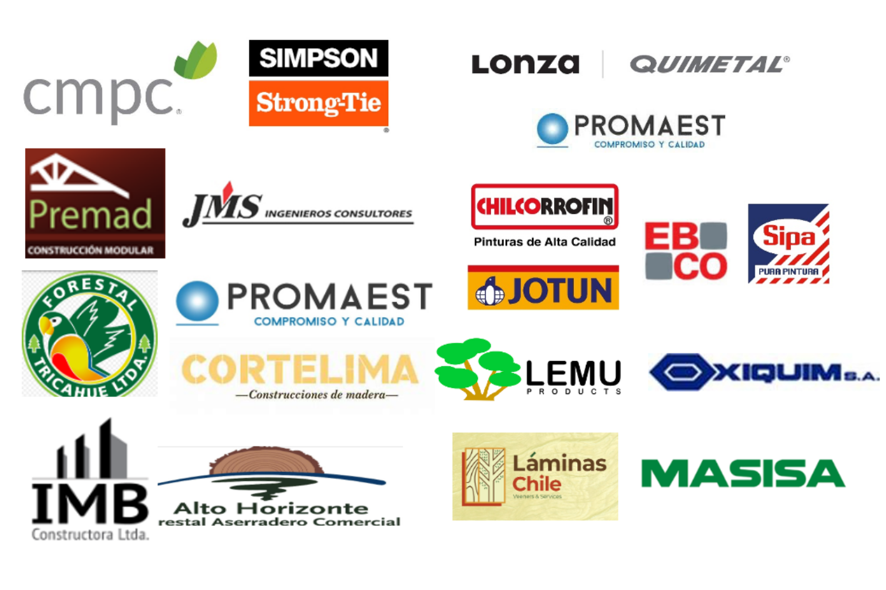
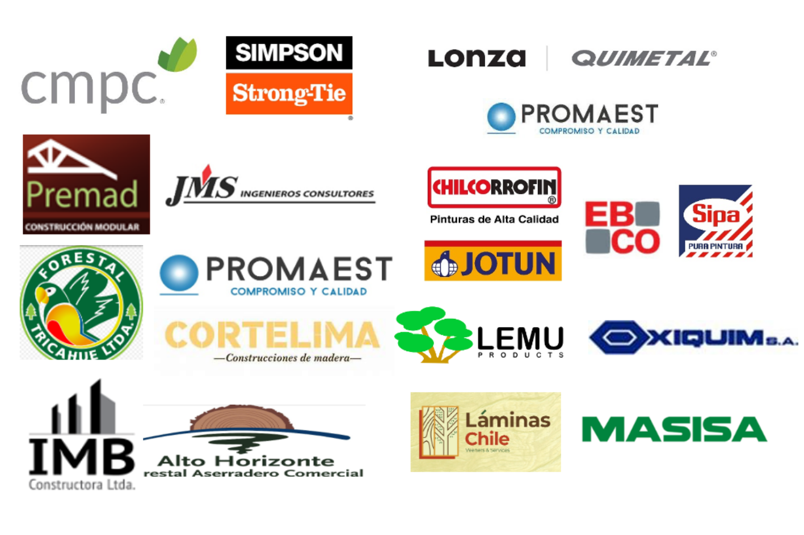

Sobre PymeLab
PymeLab es un proyecto financiado por CORFO enfocado en la innovación, prototipado y experimentación en la construcción con madera. PymeLab reunió a un conjunto diverso de empresas pequeñas y medianas empresas.

PymeLab es un proyecto financiado por CORFO enfocado en la innovación, prototipado y experimentación en la construcción con madera. PymeLab reunió a un conjunto diverso de empresas pequeñas y medianas empresas.
Derechos reservados, creados por AJC 2024